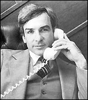

CHAPTER
FOUR
The Clearwater Hearings
 In 1979, attorney Michael Flynn (right)
was approached by a former Scientologist who wanted her money back. She told him that if
he took the case, he would receive a letter giving unsavory details of her past. He did
not believe her, but sure enough the letter arrived. Flynn became interested in the Church
of Scientology, and his interest increased markedly when someone put water in the gas tank
of his plane. He and his son had a fortunate escape. Flynn suspected Scientology, and took
on more and more clients with litigation against Scientology. 1
The town of Clearwater, Florida was increasingly
worried by the Scientology presence. The St. Petersburg Times had won a Pulitzer Prize for
its coverage of Guardian's Office dirty tricks. The courts had made the documentation used
in the GO case available; the St. Petersburg Times, and Clearwater's own Sun newspaper,
had publicized several Guardian's Office operations. The Clearwater City Commissioners,
headed by a new mayor, approached Michael Flynn, by now an expert on Scientology, to help
them in their investigation of Scientology.
Public Hearings were held in Clearwater in May 1982.
Flynn was to present witnesses and evidence regarding Scientology for a week, and then the
Church would be given the same time for its reply. Religious issues were not in question.
The City Commissioner James Berfield opened the Hearings with a statement of intent:
The purpose of these public hearings is to
investigate alleged violation of criminal and civil laws, and the alleged violation of
fundamental rights by the Church of Scientology, an organization which now conducts
extensive activities within our city. The purpose of the investigation is to determine
whether there is a need for legislation to correct the alleged violations. It is not our
purpose to interfere with any of the beliefs, doctrines, tenets, or activities of
Scientology which arguably fall within the ambit of religious belief or activity in the
broadest legal interpretation. It is not our purpose to conduct a witch hunt and receive
testimony, documents, or any other type of evidence which is not reasonably related to
significant, vital areas of municipal concern.
The Clearwater Hearings were locally televised.
Scientologists were warned not to watch them. Eddie Waiters, who had been a Class VIII
Auditor and Case Supervisor, and a member of the Las Vegas GO, set the stage with a broad
account of Scientology and its underhanded dealings. Then Hubbard's estranged son, Nibs,
took the stand. He painted his father as a complete con-man, a sinister black magician
whose philosophy resulted from horrendous drug abuse.
Lori Taverna spoke of some of her experiences. She had
joined Scientology in 1965, completed all of the available OT levels, and become a Class
VIII Auditor. She abandoned her business and her family when "NOTs" was released
in 1978, to become a Sea Org NOTs Auditor. A year at Flag, in Clearwater, slowly disabused
her of the world-saving mission of Scientology. She returned to Los Angeles ill and
confused, and after sixteen years of involvement, gradually drifted out of the Scientology
fold. She described the last scene of her withdrawal:
A particular friend came over to the house -
she had just received her NOTs auditing - and she came in and she said how wonderful she
was feeling, that she went to a restaurant, she was eating a hamburger, and all of a
sudden the hamburger started screaming at her, and then the walls started screaming. And
then she said tears came out of her eyes because she felt so sorry for the other people in
the restaurant because they didn't know what she knew.
Casey Kelly had been Director of Income at the Flag
Land Base. He testified that income there had averaged $400-500,000 per week. In a good
week they could take $1 million. The highest income Kelly remembered was $2.3 million.
Kelly spoke of a time when Church staff were forbidden
to have children because there was insufficient room in the Flag Land Base nursery. Former
Messengers have said that children were completely prohibited at Gilman Hot Springs as
well. Abortions were common. 2
Kelly complained about the CMO unit at Flag, the
youngest of whom were ten-year-olds. He described them as a "small army":
"most of the younger ones don't have positions of vast authority, but if one of them
had told me what to do, I would have said, 'Yes, sir.'" When asked what happened if
someone annoyed one of these child Messengers, Kelly said: "You'll find yourself in a
blue tee shirt scrubbing a garage usually." In other words on the Rehabilitation
Project Force, living in the garage at Flag.
Rose Pace was introduced to Scientology by her sister,
Lori Taverna, when she was thirteen. She joined the Church, and her formal education
ended. The Board of Education accepted representations made by the Scientologists that
Pace needed counselling. At fourteen, Pace became an Auditor, and began a career which
culminated in her working at the Flag Land Base, in Clearwater, as a NOTs Auditor. After
sixteen years in Scientology she said of its curative claims: "I have never seen
someone be cured of an illness."
David Ray was at the Flag Land Base cleaning the rooms
of paying public: "Well, if your statistics are up, every two weeks you're supposed
to have twenty-four hours off, called liberty .... I would keep asking them for time off
because I was working, oh, anywhere from eighteen to twenty hours a day .... And they
wouldn't give it to me."
Ray went on to express his profound resentment at the
treatment he had received: "The thing that really kills me about this whole . . .
operation is... by the questions they ask and the things they do, they open you up to your
innermost personal self . . . you're extremely vulnerable .... They pick you up and
they'll raise you so high you feel like you're on top of the world and, then, they'll drop
you and they'll let you feel like a bottomless pit .... And those are the kinds of terror
and searing emotions that go through a person's mind when they're there .... They want to
leave; they want to help themselves. You get physically tired. Sometimes you don't even
have time to take a shower. Ninety percent of the people that walk around there just -
they stink."
Ray inevitably ended up on the Rehabilitation Project
Force. His account of it is horrifying. The RPF lived on a diet of Leftovers including
wilted lettuce which was beginning to rot, and cheese with mold all over it. One day, they
were given french fries, and while eating them Ray discovered that one of the potatoes was
in fact a fried palmetto bug. From that point on, he used his weekly pay of $9.60 to buy
cookies from a health food store. It was all he could afford.
The Hartwells talked about their bizarre experiences
making movies with Hubbard in the California desert. George Meister told of the tragic
death of his daughter aboard the Apollo in 1971, and the disgraceful treatment he
received thereafter.
Lavenda van Schaik, Flynn's first Scientology
litigant, claimed that her Confessional folders had been "culled," and a list of
her deepest secrets sent to the press. She was persistently harassed by the Guardian's
Office, whose Op against her was codenamed "Shake and Bake." Before leaving
Scientology, she had been to the Flag Land Base, and found a serious outbreak of hepatitis
there, which was not reported to the authorities. An affidavit by one of the victims of
this outbreak was read into the record.
Janie Peterson, who had belonged to the Guardian's
Office, testified about her departure from Scientology: "I was terrified to even
discuss the possibility of leaving Scientology with my own husband. I was afraid that he
would stay in Scientology. I was afraid that he would write me up to the Guardian's Office
and that they would then come and take me away somewhere because I had so much
information."
Scientology had driven such a wedge between Peterson
and her husband that she did not realize that he was also contemplating leaving. Neither
dared tell the other. After leaving, she received a series of phone calls in which the
caller would hang up when the phone was answered. Then she found a note in her car saying
simply, "Watch it." Then a note in her mailbox saying, "Die." In the
middle of the night, she would hear a knock on her door, and open it to find no one there.
Scott Mayer was on Scientology staff for twelve years.
He had held many posts in that time, from Quentin Hubbard's bodyguard, when Quentin was
trying to escape or to kill himself, to being manager of the Apollo just prior to its
abandonment. In his time Mayer had seen Orgs throughout the world.
Mayer left Scientology in 1976. Two years later, he
was still a GO target, staying more or less in hiding. He eventually decided to find out
just how serious the GO was. Mayer let it be known that he was staying at a certain
address, and left his car parked outside. It was Christmas Eve, 1978. The car was blown
up. Although he could not substantiate anything about the attack, he decided the
Guardian's Office meant business, and stayed in hiding. Mayer's resolve to act was
strengthened, and he became a consultant to the IRS in their ongoing litigation against
Scientology.
Mayer had worked on confidential operations for
Scientology, among them an elaborate smuggling system which used a series of five
fictitious companies to courier money out of America. Couriers were carefully trained,
told exactly what to say if apprehended, and sent out with double-wrapped packages. The
inner wrapper was labelled with the true destination. He also talked about blackmailing a
potential defector into silence, using information from the person's Scientology
Confessional auditing. He put a photocopy of an order to "cull" auditing folders
into evidence.
Probably Mayer's most heartbreaking assignment was the
maintenance of a ranch for Sea Org children in Mexico. They were called the "Cadet
Org": "Children were routinely transported from Los Angeles to the Mexican base
and berthed and housed there . . . so that their mothers and fathers could get on with
their business within the Church."
It was cheaper to ship the kids to Mexico than to
provide acceptable housing in L.A. The ranch was not a safe environment for children:
"Bandits were coming in at night and they were stealing grain and they were stealing
saddles and whatever wasn't tied down." Mayer was ordered to set up a rifle with an
infrared sniper scope to deal with the marauding bandits. As it turned out the project was
never fulfilled, because the woman running the ranch shot one of the bandits before Mayer
arrived, and they did not return.
Bandits were not the only problem the children faced
in Mexico. There were scorpions, snakes and poisonous spiders. The brush grew right up to
the house, and neither money nor personnel were available to clear it away. Because the
Sea Org is run on a shoestring budget, it took Mayer some time to resolve this intolerable
situation. He did so not by appealing to his superior's compassion, but by pointing out
what bad public relations a death would cause. He took a jar of scorpions with him to
emphasize his point.
Scientologists believe that "Considerations"
govern "Matter, Energy, Space and Time." Which is to say, they believe in mind
over matter. "Clearing the Planet" is far more important than any individual's
physical well-being. Self-sacrifice is a common trait of the True Believer. Life in the
Sea Org is a peculiar mixture of "making it go right" (to use Hubbard's phrase),
and an often child-like belief in the miraculous power of Scientology. According to Mayer:
"Staff members were always ill-fed, ill-clothed .... I had an abscess in my tooth and
I was being audited for it. I'm ready to go to the dentist, and I was being audited for
it. I spent about a week, week-and-a-half, doing... what they call touch assists to get
rid of the pain .... And, finally ... I was just delirious and - well, there wasn't any
money for medical is what it boiled down to .... I went to the dentist... he told me I'd
just made it... if it had been another day or so, I wouldn't be here to talk to you."
Before journalist Paulette Cooper took the stand, a
former Scientology agent who had stolen Cooper's medical records testified. He also talked
about another agent placed in a cleaning company so he could steal files from a Boston
attorney's office. He gave this picture of the B-1 cell he worked in:
We used code names and our reports were written
in code names. . . . The letters that were written in the smear campaigns - the
typewriters were stolen and usually used just for a short time .... Everything was done
with plastic gloves so that there wouldn't be any fingerprints.
He was a case officer for Scientology agents who had
infiltrated the Attorney General's Office, the Department of Consumer Affairs and the
Better Business Bureau. "Each week these people would file reports... it was very
difficult for a public person in Boston to make a complaint about the Church and have it
go anywhere. We had all the bases covered."
Paulette Cooper then testified about the effects of
being on the receiving end of the Church's harrassive tactics. The Scientologists had just
filed their eighteenth law suit against her:
I am being sued now repeatedly by individual
Scientologists, who, in some cases, I don't even know, suits for distributing literature
at functions I didn't even attend. Part of the purpose in harassing people with law suits
is to keep deposing them and preventing you from writing or making a living and making you
show up at legal depositions. I've been deposed for nineteen days total since this
started, with four more coming up in a couple of weeks.
There has also been some other harassment in
the past six months or so: continued calls to me, calls to my family. The Scientologists
find out what the person's "buttons" [sensitive spots] are, as they put it, and
the way to get to them. And they know that a way to get to me is to harass my parents . .
.
They've put out libelous publications about me;
they've sent letters saying that I was soon to be imprisoned... attempts have been made to
put me in prison. They've sent false reports about me to the Justice Department, the
District Attorney's Office, the IRS. As you know, government agencies have to investigate
any complaints that they get. So, then, Scientology sends out press releases that I am
under investigation by the Attorney General's Office, I am under investigation by the DA,
and so on.
They have put detectives on me; they have put
spies on me. A few months ago, they put an attempted spy on my mother to try to get
information about me from her and to fix me up with the woman's son. . . . Somebody
cancelled my plane to Florida about a month ago, and that is the third time that happened
to me this year... I'd like to say that this was a very good year compared to the previous
years.
Cooper went on to describe her one-woman battle
against Scientology, which began in 1968. She commented wryly that she had been alone in
this battle for five years, and that she was glad that more people were finally speaking
out.
After her first article on Scientology, in 1968,
Cooper received a flood of death threats and smear letters; her phone was bugged; lawsuits
were filed against her; attempts were made to break into her apartment; and she was framed
for a bomb threat.
At one point Cooper moved, and her cousin Joy, of
rather similar appearance, took over her old apartment. Soon afterwards, before the cousin
had even changed the name plate on the door, someone called with flowers:
When Joy opened the door to get these flowers,
he unwrapped the gun... he took the gun and he put it at Joy's temple and he cocked the
gun, and we don't know whether it misfired, whether it was a scare technique... somehow
the gun did not go off... he started choking her, and she was able to break away and she
started to scream. And the person ran away.
Many of the 300 tenants in the new apartment building
were sent copies of a smear letter, saying that Paulette Cooper had venereal disease and
sexually molested children.
To answer the bomb threat charges brought falsely by
Scientology, Cooper had to find a $5,000 advance to retain an attorney. She appeared
before the grand jury, and truthfully denied the allegations throughout. She was indicted
not only for making the threats, but also for perjury! She faced the possibility of a
fifteen-year jail sentence.
Her career as a free-lance journalist was in jeopardy:
"What editor is ever going to give an assignment to someone who's been indicted or
convicted for sending bomb threats to someone they've opposed? I was very concerned about
the indictment and the trial coming out in the newspapers. The public does not know the
difference between indict and convict . . . where there's smoke there's fire."
Cooper developed insomnia, sleeping for only two to
four hours a night, and wandered around in a daze of exhaustion. The lawyers' bills for
the preparation of her case came to $19,000. She could not write. She lost her appetite
and stopped eating properly. The Scientologists were merciless; having stolen her medical
records, they knew very well that she was recovering from surgery when they began their
attack. Her boyfriend of five years left her. The Scientologists had pressed her to the
edge of extinction.
At this point, she met Jerry Levin, who took pity on
her terrible situation. She helped Levin to find an apartment in her building. He did
everything he could to help, even doing some of her shopping. At last she had a friend and
confidant who would listen to everything. And having listened, she later discovered, Levin
would file his report with the Guardian's Office. After the GO trial in 1979, Levin's
reports were made public. Jerry Levin was also known as Don Alverzo, one of the Washington
burglars. Paulette Cooper was Fair Game; in Hubbard's words she could be "tricked,
sued or lied to or destroyed." 3
It took over two years for the bomb threat charges
against Cooper to be dropped. She was completely exonerated after the FBI found the GO
Orders for the Ops against her. By that time her book, The Scandal of Scientology,
had long been out of print. The Guardian's Office had even imported small quantities into
foreign countries, so they could obtain injunctions against its distribution. Copies were
stolen from libraries and bought up from used book shops, then destroyed.
Cooper's final point to the Clearwater Commission was
the insistence that Scientology incessantly claims to have reformed itself, to have
expelled the bad elements. She had heard such claims in 1968. We are still hearing them
now. They have never been true. The Scientologists expel another scapegoat ("put a
head on a pike" in Hubbard's terms), make a great show that the culprit has been
removed, and then replace him with someone who will repeat the offending behavior.
Dr. John Clark, a noted psychiatrist who has been a
persistent observer and critic of cults, also took the stand and gave his opinion of the
intrusive nature of Scientology techniques. He explained the incredible pressure brought
to bear upon him by the Scientologists in their attempt to discredit him. He spoke at some
length about the conversion experience: the sudden change of personality which members of
Cults often undergo.
Flynn's last witness was former Mission Holder Brown
McKee, who a few months earlier had been a major voice at the Flag Mission Holders'
conference. After twenty-four years of membership, having trained to a high level as an
Auditor, and having done the vaunted OT levels, Brown McKee took a surprisingly short time
to put Scientology in perspective:
After this meeting in December [1981], we went
back to Connecticut with the firm conviction that there was no interest within this Church
for reform. The dirty tricks, the Guardian's Office operations, and that type of thing,
which they had told us were all a matter of the past, we found out were not a matter of
the past .... I've been a minister of the Church for some sixteen years, and I really took
it seriously. I've married people, I've buried them, and to me it was a duty and an honor.
And to find out what my Church had been doing - it's a little hard on me.
McKee described his most traumatic experience while in
Scientology. His wife, Julie, who was a highly trained Auditor, had started to feel tired:
You must realize both of us were totally
persuaded that the source of all illness was mental, except for, say, a broken leg, and
the way of curing it is with auditing . . .
So, during the summer, Julie lost more and more
of her energy and had some swelling and some small chest pains . . . and began to lose her
voice. So, I thought, "Well, Flag has the best Auditors in the world and should be
able to help her out." So, I sent her down here to Clearwater in, I guess it was,
October of 1978. We never even really thought about going to see a doctor... the
Scientologist doesn't think about that.
Well, they sent her back a week later sicker
and . . . she couldn't even whisper any more. She'd write notes. So, I tapped her on the
back, because she was complaining about her chest, and on one side I could hear... the
hollow sound that you hear when you tap, and the other side, it wasn't hollow. And so, I
knew that there wasn't any air on that side.
So, we went to see a doctor, and he had her in
the hospital very quickly. She was there two days when we were given the report. And what
it was was adenocarcinoma, which was a cancer of the lymph glands of the lungs, and her
right lung had totally collapsed . . . this cancer had totally infiltrated her throat and
paralyzed her vocal cords. And it had progressed to the point where it was totally
hopeless. I mean, they didn't even suggest chemotherapy. And they sent her home, and I
cared for her for ten days. And she died in my arms.
Hubbard mocks medical doctors, and most Scientologists
believe that all physical maladies have a mental or spiritual cause, and can be relieved
through auditing. OTs believe that by ridding themselves of Body Thetans they will also
rid themselves of disease. They avoid seeking proper medical advice, which means they are
often too late. Hubbard made specific claims that his techniques had cured both cancer and
leukemia. 4
On May 10, 1982, the Scientologists were scheduled to
start presenting witnesses to rebut the earlier testimony to the Clearwater City
Commission. Instead their lawyer questioned the legality of the proceedings, and, quite
typically, tried to impugn Flynn's character. He criticized the dramatic way in which
witnesses had given evidence, as if people whose lives had been ruined should retain their
composure at all costs. He complained that he had not been allowed to cross-examine
witnesses, though he failed to note that the questions had been asked by the Commission
itself, and not by Michael Flynn.
It was an empty show. The Scientologists were too
late. The evidence of their appalling past had been broadcast on local TV. No argument
regarding legal technicalities would erase from the viewers' minds the heartrending
accounts given by the witnesses.
Even so, the Commission was not established to
pronounce judgment, simply to investigate and make recommendations for possible future
action. Despite the blaze of publicity in Florida, Scientology's young rulers were faced
with other, more urgent problems.
FOOTNOTES
Principal source: Transcript
of the City of Clearwater Hearings re: The Church of Scientology, May 1982
1. Complaint in M.J.
Flynn vs. Hubbard, U.S. Court for the District of Massachusetts, no. 83-2642-C.
2. Interviews with two former
CMO executives
3. HCOPL, "Penalties for
Lower Conditions," 18 October 1967 (not in Organization Executive Course)
4. Hubbard, A History of
Man, p.20; Technical Bulletins of Dianetics & Scientology vol. 1, p. 337 |